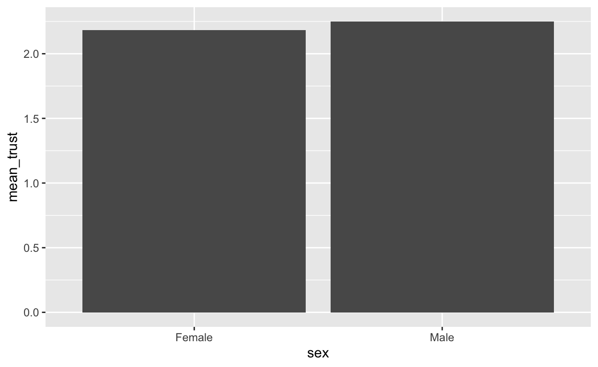
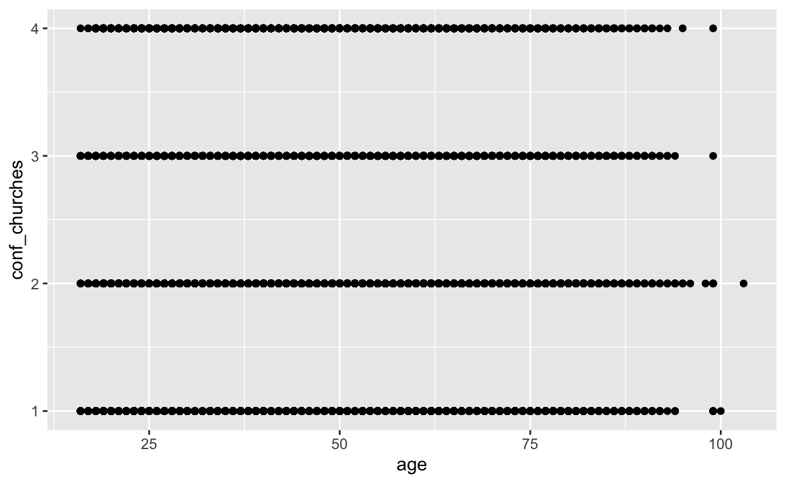
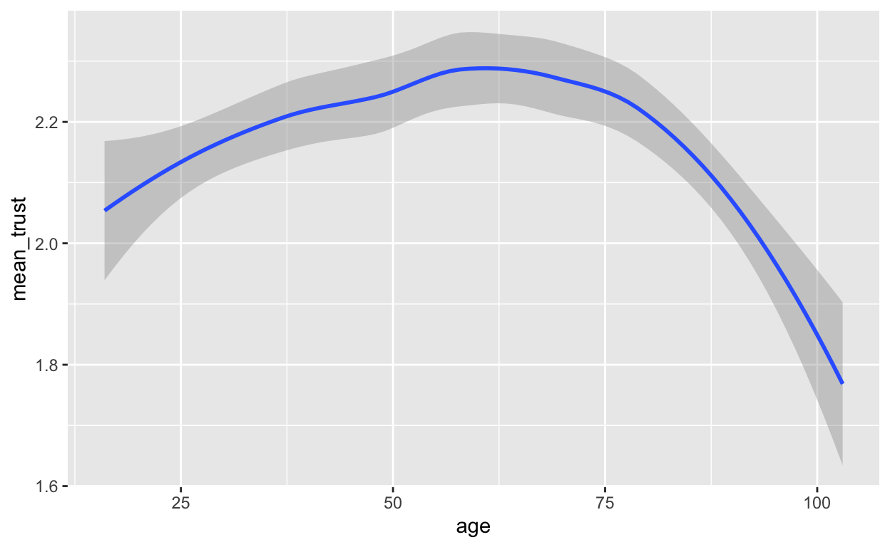
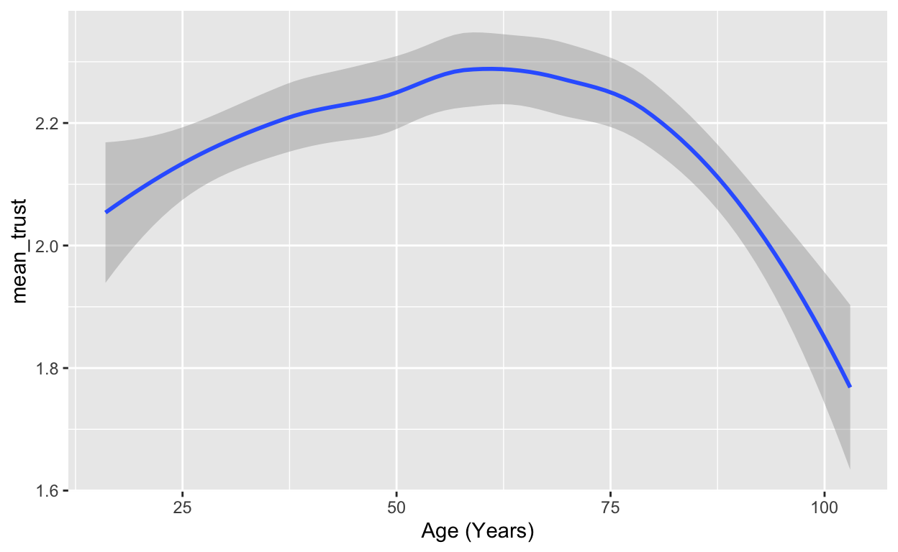
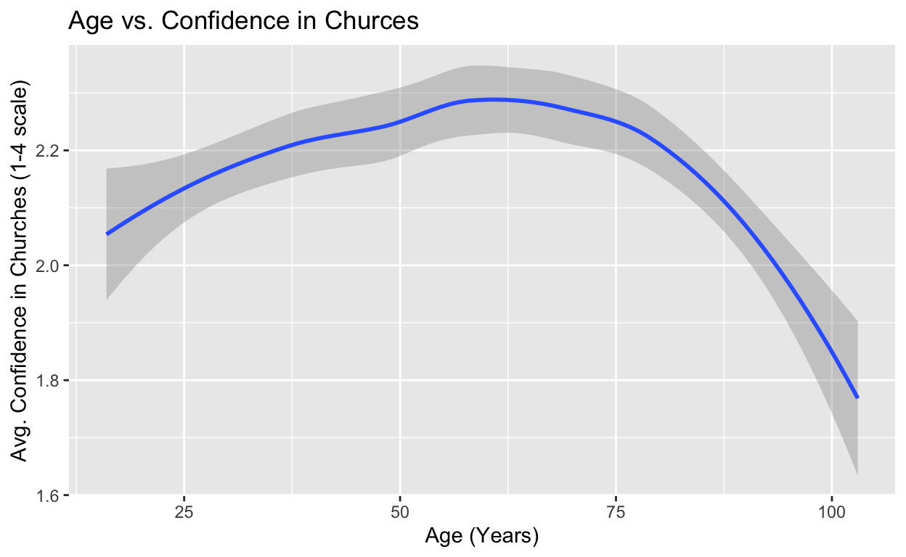

Welcome to Data Visualization!
This week, we will learn how to visualize our data. That is, we will learn how to examine data via graphs and figures. There are many ways to visualize data, and this often depends on the variables we are interested in. In particular, it is important to consider if the data we are plotting is discrete (aka categorical) or continuous.
The main package we will use to visualize data is called
ggplot2, which is part of the tidyverse. Our skills in
using dplyr and the tidyverse will come in
handy here, as we often need to manipulate and summarize our data before
visualizing it.
Note that to use ggplot2 on your device, you will need
to install and load its library. You can do so by specifically
installing the ggplot2 package and library, but also,
because it is also part of the larger tidyverse, it is
installed and loaded when you read in tidyverse package as
well!
For example, you can do the following:
library(tidyverse) #note here you do not need quotesNote that you do not need to install the library for the tidyverse on your machine since we already did so last week. OR you can do the following:
install.packages("ggplot2")
library(ggplot2) #note here you do not need quotesTopic 1: Understanding the Basics of Data Visualization
When visualizing data, it is important to understand that there are many different types of graphs and figures that you can use. We will cover a few types here.
Histogram
We use histograms to plot the distribution of a variable. That is to say, the frequency of different values of that variable. For example, the below histogram from the SAS blog shows us the distribution of SAT scores in North Carolina high schools. We can see from this plot that most students in the class of 2018 got a score of about 1100.
Importantly, histograms are used for continuous data. The main variable of interest – shown on the S axis – is divided into “bins” or ranges of values. In this case, our main variable of interest is the SAT score. The creator of this graph created bins for each range of scores, and plotted the relative frequency of students who acheived these scores.
Bar Graphs
Next we have bar graphs, or bar charts. These are commonly confused with histograms, but they are very different. While we use histograms to plot continuous data, bar graphs are used for plotting discrete, or categorical, variables. For example, the below graphic comes from the AmericasBarometer’s Assessment of Satisfaction with Public School’s in Latin America, and shows how the percentage of individuals satisfied with public schools varies across countries. On the X axis we have different countries (represented by their two-letter abbreviation). The Y axis instead corresponds to the percentage of individuals who reported being satisfied.
Scatter Plots
Scatter plots help us visualize two distinct continuous variables. Each dot represents an observation, which corresponds to its values on both the X and Y axes. For example, the plot below from The World Bank’s Atlas of Sustainabile Development Goals (2023), shows us the relationship between GDP (gross domestic prodcut) per captia (on the X axis) and the poverty rate (on the Y axis) across a variety of countries. Each dot represents a country, in this case. We can see from this plot that, in general, countries with more extreme poverty tend to have lower levels of GDP.
Line Graph
Line graphs are another means by which to plot continuous data. They are often useful to plot trends, such as trends over time or across different values of a variable. For example, the following graph comes from the Pan American Health Organization and examines how the total percent of the population living in urban areas in Canada and the United States has grown over time. On the X axis, we have year (a continuous variable, in this case) and on the Y axis we have the % of the population that is urban.
Importantly, this line graph also contains some categorical information – country name! Here, color helps to capture this categorical information (a different color line for each country, with a corresponding legend). Across many types of visualizations, we can incorporate things like color or line type to help us capture categorical variables as well. So here, the authors use two different colored lines to include two distinct countries.
Pie Chart
While there are many more types of ways to visualize data, we will conclude this introduction with pie charts. Pie charts are circle graphs where each slice represents a part of the whole. They help us to illustrate how variables break down in terms of their composition. For example, the below graphic comes from an analysis of race and religion in Politcs published in The Washington Post. It breaks down the religious identification and race of Republicans in 2012. It shows us, for example, that out of all Republicans included in this data, 34 percent identify as both white and evangelical Protestant.
Choosing the appropriate type of graph
Now that we have a few types of graphs under our belts, it is important to understand how we decide which type of data visualization to use. The following will help you to make this decision as you visualize your own data:
- What type of data am I plotting? Are the variables discrete or continuous?
- What relationship am I trying to show?
- What is the simplest way for me to convey this relationship?
Topic 2: Using ggplot2
To plot data in R, we will be using the ggplot2 package.
But before we jump in there, it is essential to note that very little
data is ready to be plotted from the get go. Often, we will need to
summarize our data first using dplyr before we plot. Never
forget this!
Plotting confidence in churches by respondent citizenship status
We’re going to illustrate how to use ggplot2 with an
example. Today, we’ll be using the World Values Survey, which here is
saved as world_values. We have close to 95000 observations
of individuals across the world about their opinions regarding
government, trust in institutions, and their values. Let’s say we are
interested in examining how confidence in churches by the citizenship
status of respondents.
First, let’s take a look at our data:
summary(world_values)## conf_churches conf_armforces conf_police conf_govt
## Min. :1.000 Min. :1.000 Min. :1.000 Min. :1.000
## 1st Qu.:1.000 1st Qu.:1.000 1st Qu.:2.000 1st Qu.:2.000
## Median :2.000 Median :2.000 Median :2.000 Median :3.000
## Mean :2.214 Mean :2.131 Mean :2.359 Mean :2.644
## 3rd Qu.:3.000 3rd Qu.:3.000 3rd Qu.:3.000 3rd Qu.:3.000
## Max. :4.000 Max. :4.000 Max. :4.000 Max. :4.000
## NA's :2009 NA's :4282 NA's :2390 NA's :3084
## sex age citizen class
## Min. :1.000 Min. : 16.00 Min. :1.000 3 :34684
## 1st Qu.:1.000 1st Qu.: 30.00 1st Qu.:1.000 4 :23643
## Median :2.000 Median : 41.00 Median :1.000 2 :18671
## Mean :1.529 Mean : 43.41 Mean :1.023 5 :10348
## 3rd Qu.:2.000 3rd Qu.: 56.00 3rd Qu.:1.000 1 : 1492
## Max. :2.000 Max. :103.00 Max. :2.000 (Other): 0
## NA's :95 NA's :510 NA's :5201 NA's : 5440Okay, looks like we have a few different variables here which capture
confidence, in addition to respondent citizenship status, we also have
sex, age, and their socioeconomic class. First, let’s re-code
citizen so that it is easier to understand. According to
the codebook, the survey asked respondents: Are you a citizen of this
country?. The value 1 corresponds to “yes I am a citizen of
this country” while 2 corresponds to “no, I am not a
citizen of this country.”
Below, we recode this variable to have more informative information
using the ifelse() command.
world_values$citizen <- ifelse(world_values$citizen == 1, "Citizen",
ifelse(world_values$citizen == 2, "Non-Citizen",
NA))Great. The codebook also tells us that for all confidence questions, higher values (in this case, a maximum of 4) corresponds to higher confidence, while lower values correspond to lower confidence.
What would be the best way to plot the relationship between these variables? Well, first we should probably consider that we need to calculate an average level of trust in churches for each sex. We can do so easily using dplyr:
# create new data frame called trust_bysex
trust_bycitizen <- world_values %>%
select(citizen, conf_churches) %>% #select only needed variables
filter(!is.na(citizen)) %>% #remove NAs
group_by(citizen) %>% #group by sex
summarize(mean_trust = mean(conf_churches, na.rm = T)) #calculate the mean trust for each group
trust_bycitizen #take a look at the final DFGreat! So now we have a new data frame called
trust_bycitizen which has the mean value of confidence in
churches for both citizens and non-citizens. Since we are interested in
a discrete variable (citizenship) and two average values of confidence,
our best bet here is a bar graph. But how do we do that? With the
ggplot function!
The ggplot() function begins as such:
ggplot(data, aes(x = ___, y = ___)Our first necessary argument is data. This is where we
tell R what data we want ggplot to plot! Second, we have
aes which stands for “aesthetics”. This is where we tell R
what we want to go on the X and Y axes. So, with that in mind, we would
proceed as follows:
ggplot(trust_bycitizen, aes(x = citizen, y = mean_trust))Above we told ggplot that our data is saved as
trust_bycitizen and on the x axis we will be plotting
citizen while on the y axis we will be plotting
mean_trust.
But, we’re not done! We have not yet specified what type of
graph we want. To specify that we want a bar graph, we will use the
command geom_col(). We will add it on to our first line of
code with a +
ggplot(trust_bycitizen, aes(x = citizen, y = mean_trust)) +
geom_col()
And look at that! We have a graph. Notice that men tend to have higher trust in churches, but there is not much of a difference.
Further, there are many different types of graphs that ggplot can handle, all with their own specific command. You are not expected to memorize them. Rather, we suggest that you always take a look at this handy cheat sheet developed by Posit.
Plotting confidence in churches by respondent age
Now let’s examine a case of plotting two continuous variables. Instead of looking at respondent sex, we are now interested in age. What might we do in this case?
Let’s first try out a scatterplot. To do so, we will add to our
ggplot command the line geom_point(), which
tells the function that we are interested in plotting points, or a
scatter plot. We will specify age as our X axis variable,
and conf_churches as our Y axis variable.
ggplot(world_values, aes(x = age, y = conf_churches)) +
geom_point()## Warning: Removed 2498 rows containing missing values (`geom_point()`).
Well, this doesn’t look great. It is not a particularly informative graph. It seems like a scatterplot is not a great option here! Why might that be? Well, we only have four possible values that our y variable (confidence in churches) could take on here. So we are simply clustering all 95,000 data poitns we have on these four values. Instead, let’s consider a different strategy.
Let’s try a line graph. In this case, we might want to see how
average trust varies with age. Once again, we will need
to summarize our data. You will get involved for this step! Below,
create a new object called trust_byage. Follow the same
code we utilized above to summarize age by sex, but now do so with the
age variable.
# create new data frame called trust_byage
trust_byage <- ___ %>%
select(___) %>%
filter(___) %>%
group_by(___) %>%
summarize(___ = mean(___, ___)) #calculate the mean
trust_byage #take a look at the final DF# create new data frame called trust_byage
trust_byage <- world_values %>%
select(age, conf_churches) %>% #select only needed variables
filter(!is.na(age)) %>% #remove NAs
group_by(age) %>% #group by age
summarize(mean_trust = mean(conf_churches, na.rm = T)) #calculate the mean
trust_byage #take a look at the final DFGreat! Now that we have out trust_byage object to work
with, we can create out line plot. You are going to do so using the code
provided below, and with the following specifications:
- Data =
trust_byage - X axis =
age - Y axis =
mean_trust - Comand for line graph =
geom_line()
ggplot(___, aes(x = ___, y = ___)) +
#insert type of graph hereggplot(trust_byage, aes(x = age, y = mean_trust)) +
geom_line()This figure shows us that, in general, average trust seems to stay
relatively stagnant until about 75 years old. However, it is still a
little difficult to interpret. Another useful plotting technique is
geom_smooth() which helps us by plotting a smooth line.
Take a look at the following:
ggplot(trust_byage, aes(x = age, y = mean_trust)) +
geom_smooth()## `geom_smooth()` using method = 'loess' and formula = 'y ~ x'
This figure helps us see a little more clearly that it is more of an inverted U relationship. That is, trust in churches seems to increase a bit until the age of 55, and then begins to decrease. Notice that there is a shaded region around the blue line. Don’t worry about this too much right now, but this is called a “confidence interval”
Topic 3: Improving our visualizations
So far, our visualizations have done the trick, but frankly they don’t look too good! Here, we’re going to learn how to spruce them up a bit. This is absolutely essential, as data visualization is supposed to help make our data more understandable to our audience. We need to always keep this in mind!
Note that ggplot2 often offers more than one way to do
the following tasks.
Axis Labels
First, it is crucial to have labels on your axes that your audience can interpret. For example, let’s take our past graph about trust in the church and respondent age.
ggplot(trust_byage, aes(x = age, y = mean_trust)) +
geom_smooth()## `geom_smooth()` using method = 'loess' and formula = 'y ~ x'
Ideally, we would like to have the x-axis label be a bit more
information. For example, “Age (Years)” is properly capitalized and
helps our audience know the unit that we are using. To do this, we can
use the labs argument as follows:
ggplot(trust_byage, aes(x = age, y = mean_trust)) +
geom_smooth() + #smooth line
labs(x = "Age (Years)") # x axis label## `geom_smooth()` using method = 'loess' and formula = 'y ~ x'
Nice! It worked. Your turn – why don’t know add a more informative label to the y axis? Started code has been provided to you below.
ggplot(trust_byage, aes(x = age, y = mean_trust)) +
geom_smooth() + #smooth line
labs(x = "Age (Years)", #x axis label
y = ___) # y axis labelggplot(trust_byage, aes(x = age, y = mean_trust)) +
geom_smooth() +
labs(x = "Age (Years)",
y = "Avg. Confidence in Churches (1-4 scale)")Nice job!
Plot Title
Related to axes labels, we also want an informative title for the
whole plot! The labs portion of our plot can be used for
this as well. See below:
ggplot(trust_byage, aes(x = age, y = mean_trust)) +
geom_smooth() + #smooth line
labs(x = "Age (Years)", # x axis label
y = "Avg. Confidence in Churches (1-4 scale)", # y axis label
title = "Age vs. Confidence in Churces") # title## `geom_smooth()` using method = 'loess' and formula = 'y ~ x'
Colors and Background
ggplot2 also allows us to adjust things like the
background color of our plot, in addition to the color of the lines,
bars, and other elements we use.
1) Changing the background
To many, a simple white background in a plot is preferable to a grey
background. We can easily add this to our plot with the
theme_bw() command. This indicates that we want the theme
of our plot to be black and white (hence “bw”).
Below, add a line to the plot (remember to use the +)
and place the line theme_bw() at the end of the plot.
ggplot(trust_byage, aes(x = age, y = mean_trust)) +
geom_smooth() + #smooth line
labs(x = "Age (Years)", # x axis label
y = "Avg. Confidence in Churches (1-4 scale)", # y axis label
title = "Age vs. Confidence in Churces") #make sure to add plus
# add new lineggplot(trust_byage, aes(x = age, y = mean_trust)) +
geom_smooth() + #smooth line
labs(x = "Age (Years)", # x axis label
y = "Avg. Confidence in Churches (1-4 scale)", # y axis label
title = "Age vs. Confidence in Churces") + # title
theme_bw()What do you notice? You should see that the background of the plot has now become white. This allows the line to pop a bit more.
2) Adjusting colors
You may also want to adjust the colors of your plot, such as the color of the line of the fill of the bars. The way you do so is often dependent on the type of plot you are making. It is always a great idea to Google how to customize a certain plot and reference the Posit ggplot2 Cheat Sheet.
In the case of our smooth line plot, let’s say we want to make that
blue line into a black line. I can add a new arguement to our
geom_smooth line which specifies that the line color should
be black: color = "black".
ggplot(trust_byage, aes(x = age, y = mean_trust)) +
geom_smooth(color = "black") + #smooth line - make it black
labs(x = "Age (Years)", # x axis label
y = "Avg. Confidence in Churches (1-4 scale)", # y axis label
title = "Age vs. Confidence in Churces") + # title
theme_bw()## `geom_smooth()` using method = 'loess' and formula = 'y ~ x'
Now you try! Make the color of the line “red”:
ggplot(trust_byage, aes(x = age, y = mean_trust)) +
geom_smooth(___) + #smooth line
labs(x = "Age (Years)", # x axis label
y = "Avg. Confidence in Churches (1-4 scale)", # y axis label
title = "Age vs. Confidence in Churces") + # title
theme_bw()ggplot(trust_byage, aes(x = age, y = mean_trust)) +
geom_smooth(color = "red") + #smooth line - make it red
labs(x = "Age (Years)", # x axis label
y = "Avg. Confidence in Churches (1-4 scale)", # y axis label
title = "Age vs. Confidence in Churces") + # title
theme_bw()Topic 4: Practice and Comprehension Quiz
Let’s put what you learned to the test! Your task is to create two graphs. You will not have all of the information you need from this tutorial, and you will need to reference the Posit ggplot2 Cheat Sheet.
Here, we will be examining trust in the government generally speaking both by respondent’s citizenry (whether or not they are a citizen in their country of residence) and their socioeconomic class. The variables we will be using are as follows:
conf_govt: confidence in government on a 1-4 scalecitizen: 2 = not a citizen of the country, 1 = citizen of the countryclass: self-reported socioeconomic class from a 1-5 scale (where 1 is lower class, and 5 is upper class)
First, let’s recode citizen so it is a bit easier to
interpret. Recode the variable so it has two values: “Citizen” and
“Non-Citizen”. Use an ifelse() statement to do so.
world_values$citizen <- ___world_values$citizen <- ifelse(___, ___,
ifelse(___, ___, NA))world_values$citizen <- ifelse(world_values$citizen == 1, "Citizen",
ifelse(world_values$citizen == 2, "Non-Citizen", NA))1) Bar Graph
First, plot the average level of confidence in the government for
citizens and non-citizens. Don’t forget that you’ll have to summarize
the data first using dplyr! Note that for a bar graph, you will need to
specify that fill = "blue" instead of color to fill the
whole bar with that color. Complete the following tasks:
- Make the bars be “blue”
- Label the x axis “Citizenship Status”
- Label the y axis “Avg. Confidence in Gov’t (1-4 scale)”
- Provide an informative title for the figure
- Give the figure a black and white background
citizen_govt <- ___ %>%
select(___) %>%
filter(___) %>%
group_by(___) %>%
summarize(mean_trust = ___)
ggplot(___, aes(x = ___, y = ___) +
geom_col(___) +
labs(___) +
theme_bw()citizen_govt <- world_values %>%
select(conf_govt, citizen) %>%
filter(!is.na(citizen)) %>%
group_by(citizen) %>%
summarize(mean_trust = mean(conf_govt, na.rm = T))
ggplot(citizen_govt, aes(x = citizen, y = mean_trust)) +
geom_col(fill = "blue") +
labs(x = "Citizenship Status",
y = "Avg. Confidence in Gov't (1-4 scale)",
title = "Citizenship vs. Confidence in Gov't") +
theme_bw()Challenge: Create a similar graph (and re-summarize
the data) to also include respondent class. Group by both respondent
class and citizen status when summarizing trust. Plot class on the
x-axis, confidence on the y-axis, and specify citizenship to be the
“fill” of the bars in the aes argument.
#summarize data
citizen_govt2 <- world_values %>%
select(conf_govt, citizen, class) %>%
filter(!is.na(___)) %>% #remove NAs for citizen variable
filter(!is.na(___)) %>% #remove NAs for class variable
group_by(citizen, class) %>%
summarize(mean_trust = mean(conf_govt, na.rm = T))
#plot
ggplot(citizen_govt2, aes(x = class, y = mean_trust, fill = citizen)) +
geom_col(position = "dodge") +
labs(x = "Socioeconomic Class",
y = "Avg. Confidence in Gov't (1-4 scale)",
title = "Class, Citizenship, and Confidence in Gov't") +
theme_bw()#summarize data
citizen_govt2 <- world_values %>%
select(conf_govt, citizen, class) %>%
filter(!is.na(citizen)) %>%
filter(!is.na(class)) %>%
group_by(citizen, class) %>%
summarize(mean_trust = mean(conf_govt, na.rm = T))
#plot
ggplot(citizen_govt2, aes(x = class, y = mean_trust, fill = citizen)) +
geom_col(position = "dodge") +
labs(x = "Socioeconomic Class",
y = "Avg. Confidence in Gov't (1-4 scale)",
title = "Class, Citizenship, and Confidence in Gov't") +
theme_bw()Once you have completed these tasks, please complete this comprehension quiz..